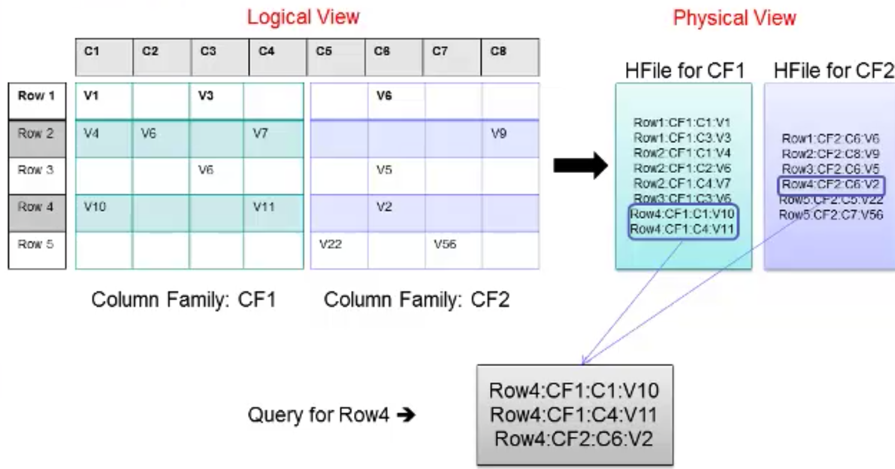

第一部分给出了数据中台的分层，第二部分给出了计算框架，这一部分来看看计算之外的，包括：HBase与Hive
本篇是本系列第三篇
上一部分是计算，这一部分是存储与查询，对接计算之后结果的存取。其中HBase是存储，它是基于HDFS；Hive是基于MR，提供近似SQL的查询，经过解析转换成相应的计算。
下一篇介绍的ES应该与Hive一层，考虑到这2个组件先不考虑适用，将它们分开
ElasticSearch是搜索引擎、Logstash是用来日志的搜集、分析、过滤日志的工具、Kibana 为 Logstash 和 ElasticSearch 提供的日志分析友好的 Web 界面；
这一部分只做简单的介绍
HBase
数据模型
Table：HBase以表(Table)的方式组织数据；
HBase：HBase表中的行通过RowKey（类似于DB表的主键）进行唯一标识，HBase表中的行是按RowKey字典顺序排列的；
Column Family：引入列族的概念，它将一列或多列组织在一起，列族作为表模式定义的一部分必须预先给出
Column： 每个列都数据列族，列名以列族作为前缀，每个列族都可以有多个列成员，新的列，可以随时按需动态加入；
Cell：行和列的交叉点称为单元格，单元格的内容就是列的值，以二进制形式存储；
Version：每个Cell的值可保存数据的多个版本（到底支持几个版本可在建表时指定），按时间顺序倒序排列，时间戳是64位的整数，可在写入数据时赋值，也可由RegionServer自动赋值

在逻辑结构上，是按Row -> CF -> Column -> Cell来存储；
在物理存储中，类似于键值对的存储方式，key认为是Row:CF:C，value就是Cell除了值还包括一个时间戳。
原理

一图胜万言，架构就不多说了，主要是RegionServer内部，每一个 Region Server 管理着很多个 Region。对于 HBase 来说，Region 是 HBase 并行化的基本单元。因此，数据也都存储在 Region 中。这里我们需要特别注意，每一个 Region 都只存储一个 Column Family 的数据，并且是该 CF 中的一段（按 Row 的区间分成多个 Region）。Region 所能存储的数据大小是有上限的，当达到该上限时（Threshold），Region 会进行分裂，数据也会分裂到多个 Region 中，这样便可以提高数据的并行化，以及提高数据的容量。每个 Region 包含着多个 Store 对象。每个 Store 包含一个 MemStore，和一个或多个 HFile。MemStore 便是数据在内存中的实体，并且一般都是有序的。当数据向 Region 写入的时候，会先写入 MemStore。当 MemStore 中的数据需要向底层文件系统倾倒（Dump）时（例如 MemStore 中的数据体积到达 MemStore 配置的最大值），Store 便会创建 StoreFile，而 StoreFile 就是对 HFile 一层封装。所以 MemStore 中的数据会最终写入到 HFile 中，也就是磁盘 IO。由于 HBase 底层依靠 HDFS，因此 HFile 都存储在 HDFS 之中。这便是整个 HBase 工作的原理简述。
使用
cli使用如下：
1 | create 't', 'cf1' |
1 | public class HBaseBasic { |
Hive
简介
Hive是最原始的sql on hadoop组件，原理是将SQL语句转换成mapreduce作业。它有一个metastore的概念，就是元数据，这个元数据在后面其他的框架里面也有。Spark有SparkSQL组件，Flink有FlinkSQL组件。
Hive适合的是什么场景呢？数据仓库。基于Hadoop做一些数据清洗啊（ETL）、报表啊、数据分析啊。基本上就是朝着替代传统数据库的方向去的，当然是在大数据背景下的替代。本质上来说，它还是一个面向读的、面向分析的SQL工具。
出处
特点
Hive最大的特点是通过类SQL来分析大数据，而避免了写MapReduce程序来分析数据，这样使得分析数据更容易；
数据是存储在HDFS上的，Hive本身并不提供数据的存储功能；
Hive是将数据映射成数据库和一张张的表，库和表的元数据信息一般存在关系型数据库上（比如MySQL）；
数据处理方面：因为Hive语句最终会生成MapReduce任务去计算，所以不适用于实时计算的场景，它适用于离线分析
架构
使用
Hive的使用跟sql就很像，这个加载稍微说一下：
创建表：
create table IF NOT EXISTS default.log (
ip string COMMENT 'remote ip address' ,
user string ,
req_url string COMMENT 'user request url')
COMMENT 'BeiFeng Web Access Logs'
ROW FORMAT DELIMITED FIELDS TERMINATED BY ' '
STORED AS TEXTFILE ;
加载数据：load data local inpath '/opt/datas/bf-log.txt' into table default.log;
local：从本地文件加载数据到hive表；否则从HDFS加载数据到hive表。
更多示例